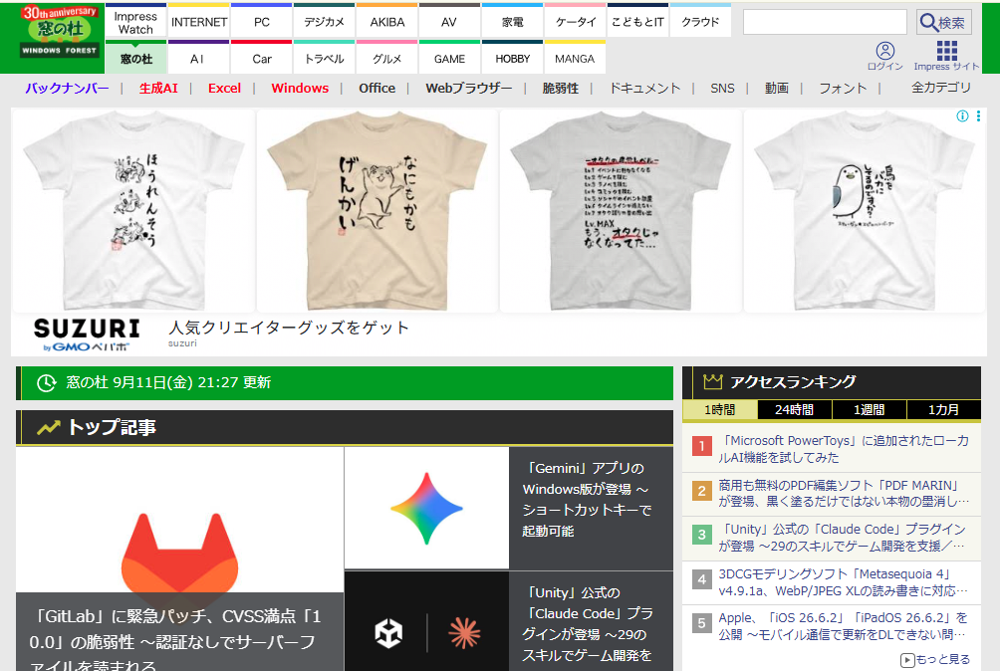
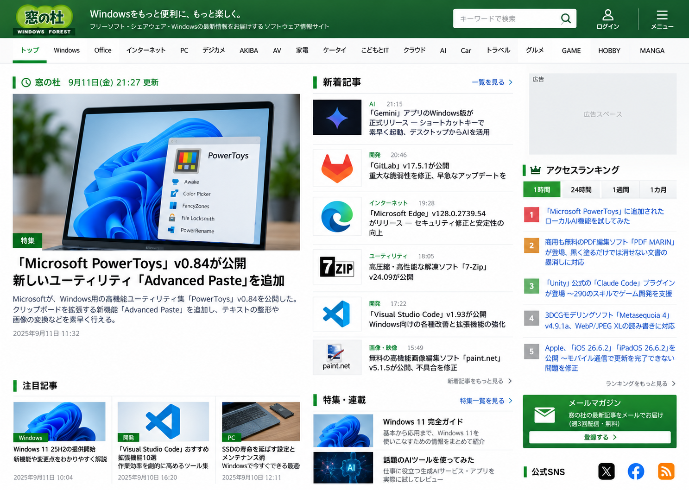

まず良かったところ
- 更新時刻が明確で、情報の新しさを判断しやすい
- WindowsやAI、ブラウザーなど幅広い分野を横断できる
- トップ記事とランキングから重要な話題をすぐ把握できる
Gallery 003
ソフトウェアとの出会いを、もっと速く、深く。
リデザイン公開
第3弾は、Windows向けソフトウェア情報を長年届けてきた窓の杜。速報性と情報量を残しながら、主記事、新着、ランキングの優先順位を整理し、目的の記事へ素早く移動できるトップページへ再構成します。


Windowsを、もっと便利に、もっと楽しく。
窓の杜らしい緑と情報密度を受け継ぎながら、主記事を大きく、新着を時系列に、ランキングを右側に整理。ニュースサイトとしての速さと、ソフトを探す楽しさが両立する編集部型トップページを目指します。
窓の杜の魅力は、ソフトの更新を追う実用性と、知らなかった道具に出会う偶然性です。情報を減らすのではなく、重要度が一目で伝わる順番へ整えることで、読みやすさと発見の両方を残します。